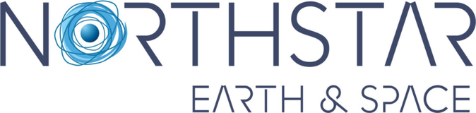

About me
Aerospace Engineer specialised in Space, Launchers & Satellites, with a dual Master's between IPSA (France) and Concordia University (Canada). I'm currently an Orbital Dynamics Specialist at NorthStar Earth & Space in Montreal, providing astrodynamics expertise for space domain awareness (SDA) and orbit determination operations. My core focus is orbital mechanics, orbit determination and numerical simulation, combined with data engineering and machine learning. Before joining NorthStar, I completed a research internship at NUS, building physics-informed complex-valued neural networks to mitigate ionospheric scintillation in SAR imagery — with a paper targeting ISAP 2026.
Current position
Orbital Dynamics Specialist
NorthStar Earth & Space, Montreal — Sep 2026–present

Space Domain Awareness
Orbit Determination
Astrodynamics
Space Operations
Customer Support